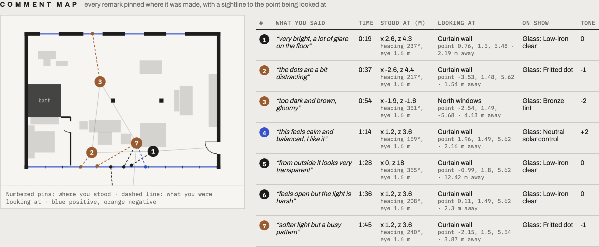

<section id="remarks">
<p class="eyebrow">The remarks</p>
<h2>Every remark is pinned where it was said</h2>
<div class="frame" style="width:1412px;height:602px;align-self:center"></div>
<p class="foot">Visual Vibes · glazing study · report</p>
<aside>Each remark records where the person stood, which way they faced, the exact point they were looking at and how far away it was, the glass on show at that moment, and a tone score. Remark 5 was made outside in the garden, so its pin sits beyond the plan.</aside>
</section>
